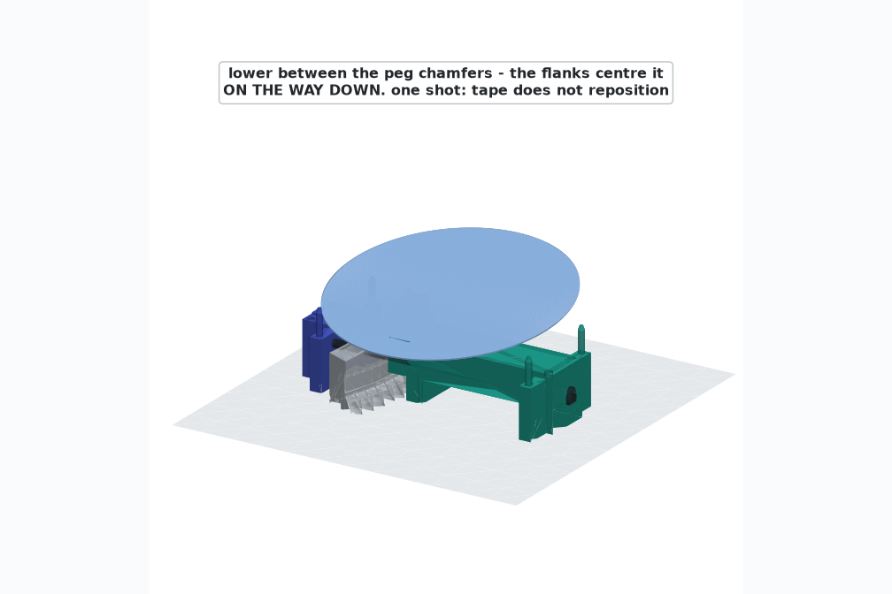
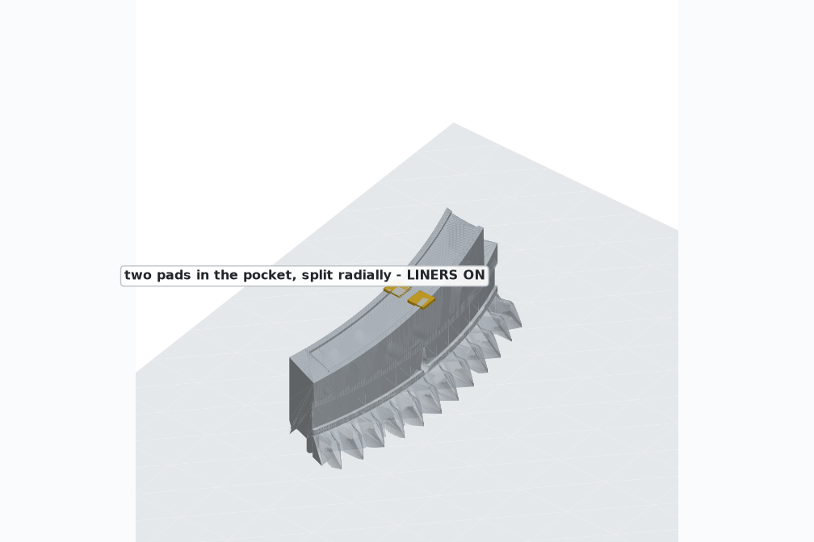
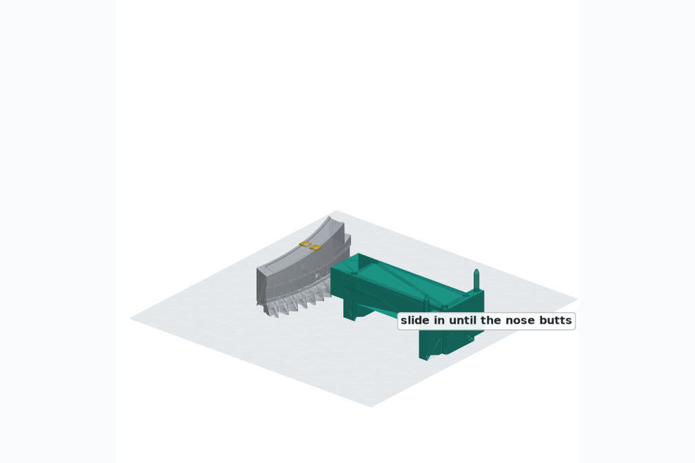
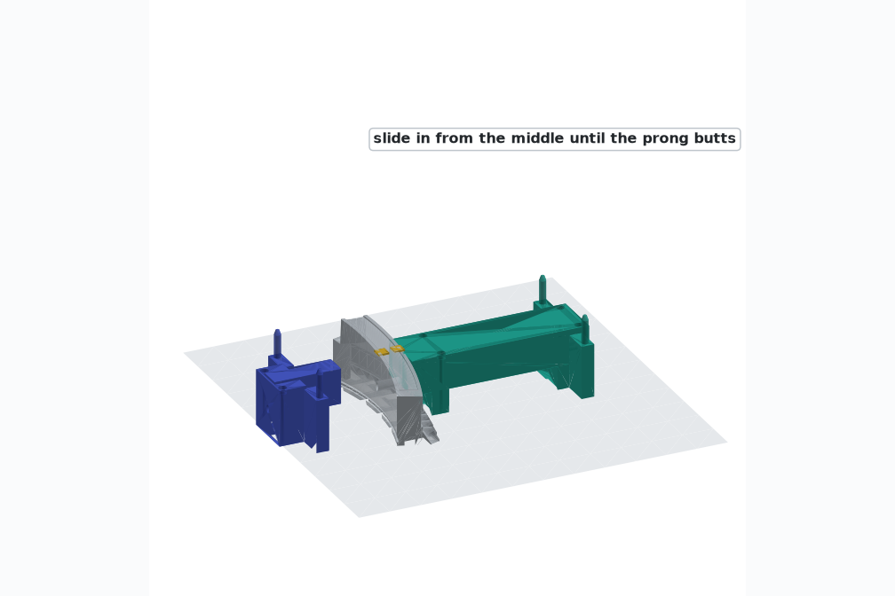
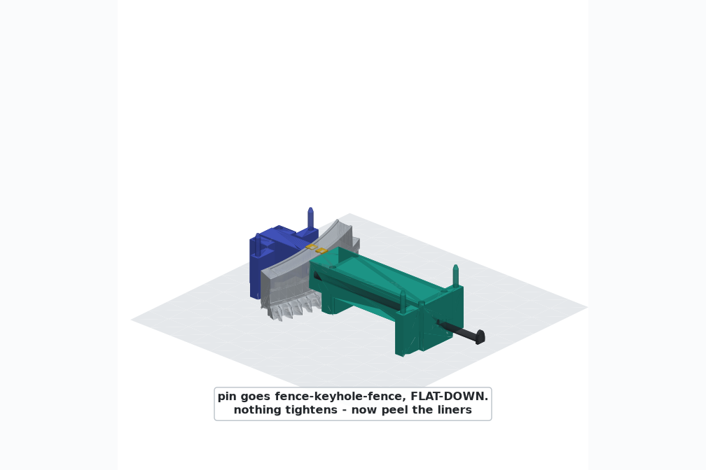
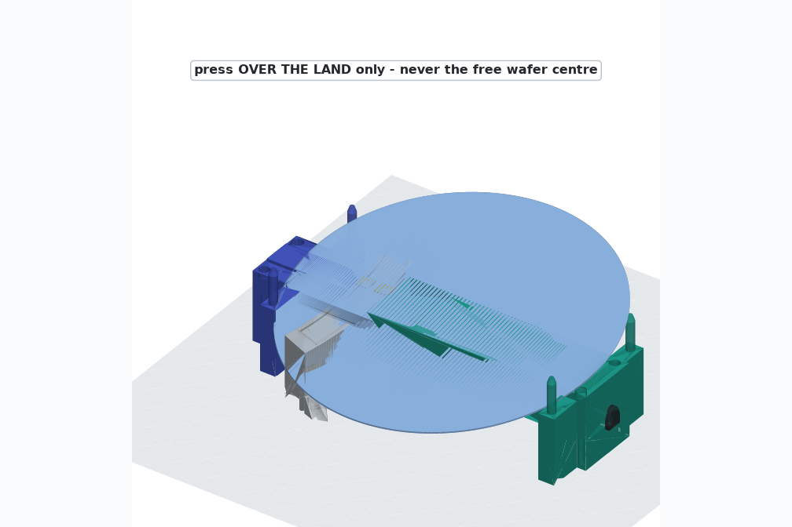

Tape Jig — Step by Step
This jig lands a wafer dead-centred on its taped segment in one try. Acrylic foam tape grabs on first contact — there is no cure hold and no repositioning — so the jig's whole job is to make sure the wafer arrives aligned before it touches: two printed fences register on the segment over one pin through the keyhole, and their four chamfered pegs form a funnel the wafer drops through. Nothing clamps, nothing tightens; the old cure-jig drivetrain (rod tension, nuts, washer, knob) is gone.
What you need

| Part | Where | Notes |
|---|---|---|
| Outboard fence | stl/cure_jig_outboard.stl | print at 10–15 % infill — no real load path, don't print it dense. Both fences carry Ø5.4 bench hold-down holes on a 25 mm grid (counterbored): bolt them to a 25 mm-pitch breadboard at their nominal working separation for mockups. |
| Inboard fence | stl/cure_jig_inboard.stl | same settings |
| Locating pin | stl/cure_jig_pin.stl | Ø6.2 D-section × 331 mm, prints lying on its flat. An M6 rod from the cure-jig days also works, a touch looser. |
| Acrylic foam tape | Scotch-Mount Extreme, ~1.1 mm | two 13×13 pads per station — small on purpose, see engineering (shrinking the bond improves the thermal case) |
| 91% IPA or denatured alcohol | cleaning. Never acetone on the print. |
One-time setup
Check the keyhole
The keyhole prints at Ø6.5 and the pin slides straight through — no reaming in the normal case; if yours printed snug, one pass with a 6.5 mm bit clears it. It's the radial hole in the outer face, 13.35 mm above the bottom, all the way through.
Segments printed before the M6 change (Ø5 hole, or the old blind hole) — drill through from the outer face at 6.5 mm and they're current.

Dry-run once
Assemble the jig on a bare segment and drop a wafer through the funnel with no tape. You'll feel the pegs centre it on the way down and see it lift straight back out — that's the whole motion, and the first taped bond stays boring.

Taping a wafer
Segment flat on the bench
One segment, flat bottom down, keyhole facing you. Wipe the land and pocket with alcohol.
Tape in the pocket — liners ON
Two 13×13 pads, in the recessed pocket, split radially about its middle. Press the pads onto the plastic firmly. Leave the top liners on — the jig still has to slide in around the segment.
More tape is worse, not better: thermal stress grows with pad spread, not shrinks.

Slide in the outer fence
From outside, on the keyhole axis, until its nose stops hard against the segment.

Slide in the inner fence
Same move from the middle of the ring, until its prong stops against the segment's inner wall.

Pin through, flat down
Push the pin in from the outside: fence → keyhole → fence, D-flat down (the pull head shows you the orientation). Nothing threads, nothing tightens — the pin just locks the fences onto the segment's axis. Keep light hand pressure holding both noses seated for the next two steps.

Peel the liners
Reach in from above and peel both top liners. The tape is now live — from here the wafer gets one landing.
Lower the wafer through the funnel
Hold it by the edges only, roughly centred over the pegs, and lower it straight down. The chamfered tips lead it in and the flanks centre it on the way down — ±0.15 mm radially, ±0.40 mm sideways — so it lands aligned on the tape.
Press over the land, then lift the jig away
Press firmly over the land only — the arc the segment actually supports — for a few seconds; foam tape wants pressure, not time. Slide the pin out, part the fences, done. The jig is reusable for all nine stations.

Edges only — never grip the wafer's faces. Never press the middle — the centre is 197 mm of unsupported glass-brittle silicon; 2–3 N of point load there is the breaking allowable. One landing — tape does not reposition; if a drop goes visibly wrong, peel the wafer off slowly by the edge nearest the pads, replace the tape, and go again.
Why it centres itself
The keyhole sits on the wafer-centre meridian, so the pin runs directly beneath the centre of the wafer, and the four peg flanks sit at projected-rim + 0.15 mm about that same centre. When the fences hit their stops, the peg funnel is the nominal wafer position: ±0.15 mm radially, about ±0.40 mm sideways. With glue the wafer used to settle into that window after touchdown; with tape the same flanks do the work on the way down — X and Y constrained, Z free (nothing overhangs the wafer), never overconstrained, and every dimension re-derives from the wafer Ø and tilt.


The fences register on the segment — printed plastic against printed plastic — and the only force the silicon ever sees is your deliberate press over the supported land. The wafer descends through 0.15 mm of air on every side, held in X/Y by the pegs while gravity owns Z. Every clearance and every capture direction is boolean-checked by scripts/cure_jig_stl.py (14 checks) each time it's regenerated.
Back to the overview · production · engineering · spec in CLAUDE.md · every picture and video on this page is rendered from the same CAD that makes the STLs.